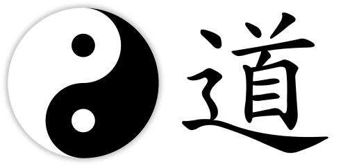
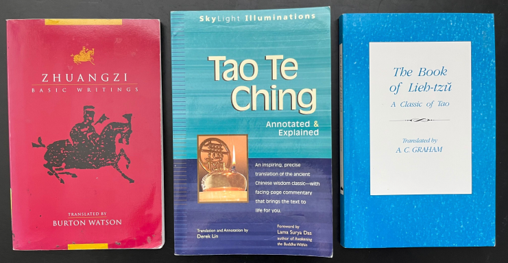

The Road to Taoism is Paved With Punk Music
I’d love to see a punk band composed of Taoist monks. Or maybe it should be the other way around. I’m aware that serene, enlightened elders and loud, aggravating youngsters aren’t exactly interchangeable. After reading a bit of Taoism, though– and listening to punk music for much longer– I think they’re actually closely related coins, if not two sides of the same one. So grab a stack of your favorite timeless texts translated from classical Chinese, the most provoking songs from your teenage years, and let’s see how much they have in common.
First, some definitions. Taoism is a tradition of thought originating from China thousands of years ago that sits somewhere between a religion, a philosophy, and a way of life. It centers around the idea of the Tao, a formulation of an ultimate, eternal source of existence that transcends even being and non-being through a balanced dynamism of opposites. It might be better to conceive of the Tao by understanding what it isn’t: “The Tao that can be spoken is not the eternal Tao.”1 Taoism therefore is fundamentally about relations, and in particular with cultivating growth from movement through life, where the only constant is change. I think this is best captured by the common translation of the Tao into English as “the way,” with the next moment always being a step ahead in both space and time.
On the other hand, punk is pretty straightforward: Rock music, first released in the ’70s and ’80s, played loud and fast with simple chords and rhythms, bearing a visual and lyrical aesthetic designed to incite and inflame. For punk in a classical sense (however much of an oxymoron that may be), it’s designed from the ground-up to challenge norms and tear down the establishment: there’s a reason that your immediate image of punk rockers conjures spiky hair, studded leather jackets, and suggestive hand gestures. I’m going to take this a step further, though– what if punk has nothing to do with the music, or even the aesthetic? Underlying all of punk is rebellion, which can manifest itself in countless ways, has existed long before Black Flag or the Dead Kennedys formed, and will persist for long after.
Taoism and punk are united because if Taoism is chiefly about relations, so is rebellion, which by definition is an opposition.

Left, a ubiquitous image of the yin and yang. Right, the Chinese character for Tao, often translated into English as “the way.”
If everyone started wearing spiky hair and studded leather jackets, it wouldn’t be out of the ordinary anymore, and would then cease to be an act of rebellion. This conformity is precisely what has happened in so many punk communities– where the participants, or practicioners rather, look the same, act the same, and share the same views– that has led to much bemoaning over the death of punk. To find living punk, though, just look for those who can’t quite be characterized, who don’t all fit a definition and aren’t trying to imitate what has come before. No, I’m not trying to say that punk is contrarian– opposition for opposition’s sake– but crucially that it’s creative, birthing something new from a tension with the old.
Punk music was born from the excesses of rock-n-roll, exemplified by the increasingly theatrical and self-indulgent performances that generated so much mainstream attention (and money). Let’s do away with all of these disgraces to the genre, the founding punk artists proclaimed, instead insisting on raw shows in dingy venues to small yet authentically engaged audiences. A similar observation can be made for black metal as a reaction to death metal in the ’90s,2 and even the rise of gangsta rap as a response to acceptance of rock. Rebellion needn’t have a particular sound; it just requires the right combination of novelty and abrasiveness, at least to the old guard.
My own attendance at a show for Sueco, whose music is rebellious because it sounds like music from 20 years ago that isn’t made anymore. A drummer, guitarist, and proper frontman can go a long way.
The “big three” tomes of Taoism– the Tao Te Ching, the Zhuangzi, and the Lieh-Tzu– capture this lesson of birth through death, and vice versa, via a series of poems, parables, and prose that famously lack directness. Similar to how the true Tao is the Tao that cannot be named, the lessons of Taoism are not found in the text itself but rather in the experience of examining and reflecting on the message. These works leverage analogies with nature or clever use of everyday language to illustrate, for example, that a particular state or condition doesn’t exist in isolation, instead arising from its comparison:3
When the world knows beauty as beauty, ugliness arises
When it knows good as good, evil arises
Thus being and nonbeing produce each other
Difficult and easy bring about each other
Long and short reveal each other
High and low support each other
Music and voice harmonize each other
Front and back follow each other
Compare this to the lyrics from “Suburban Home” by the Descendents, which clearly shouts something more than it says. (The singer, of course, is mostly yelling.)
I wanna be stereotyped
I wanna be classified
I wanna be a clone
I want a suburban home
I wanna be masochistic
I wanna be a statistic
I don’t want no hippie pad
I want a house just like mom and dad
At some point or another, we have all wanted to throw our hands up and walk away,4 either from the mundanity of modern life or something more (or less) profound. Whether we actually follow through is a different matter. It’s natural to hit your break point in any instance, be it after physical exertion from exercise, intellectual exhaustion after work or study, or interpersonal communication with a partner. Facing this split is often the precise opportunity for worthwhile development5:
The eye is about to grow dim when it can discern the tip of a hair; the ear is about to go deaf when it can hear the wings of a gnat; the palate is about to deteriorate when it can discriminate between the waters of the Tzu and the Sheng; the nostrils are about to clog when they can distinguish scorched and rotten smells; the body is about to stiffen when it delights in sprinting; the mind is about to go astray when it can recognize right and wrong. Therefore if a thing does not reach its limit it will not revert.
Zhou Dunyi modeled this sentiment in an even higher abstraction in the 11th century when describing how the opposing forces of yin and yang generate each other, and in turn, everything else that can follow:6
Non-polar and yet Supreme Polarity! The Supreme Polarity in activity generates yang; yet at the limit of activity it is still. In stillness it generates yin; yet at the limit of stillness it is also active. Activity and stillness alternate; each is the basis of the other. In distinguishing yin and yang, the Two Modes are thereby established… yin and yang are simply the Supreme Polarity; the Supreme Polarity is fundamentally Non-polar.

The three most enduring works of Taoism, in all their paperback, modern English glory. I recommend reading them, from these translators, in the order shown here.
Continuing to quote Taoist passages certainly feels like citing any other religious scripture. The difference, to me, is that Taoism primarily draws from observation, with the words provided in a take-it-or-leave-it manner, left behind from those who came before. When Carl Jung analyzed many of the world’s spiritual traditions to note recurring patterns and collective elements shared across time and culture, his thinking was both heavily influenced by Taoism and ultimately reflected many of its principles. Taoism functions, then, as a sort of meta-philosophy, almost like mathematics, sitting above other ways of thinking while at the same time being limited in what it itself can say.
In that vein, rebellion isn’t always about sticking it to the powers that be. It can be as simple as standing up for yourself, even when knowing it will hurt. Just take it from New Found Glory in “2’s + 3’s” (with the singer, of course, not professing gently):
I sat and stared at the sky
I knew I’d find myself there again
I wonder how else to cope with the air
The air that brings me this luck
I’m unlucky, that’s just me
Seems what used to be has changed
And I feel it coming again
I feel it coming with the wind
I feel it coming again
I feel it breaking with the wind
And I know, I won’t feel it again if I just played along
“Stupid games are for stupid people” and they end just like a song
A song with no beginning, a song that has no meaning
Just like this one, just like this one
As the utility of Taoism best shines in its application across various domains, rebellion is not limited to music. Part of the reason that free7 and open-source software resonates with me, aside from its performance over competing options, is the rebellion inherent in it. Ask someone what operating system they have on their computer, and odds are, it’s either Windows (Microsoft) or MacOS (Apple). There is a third option, though, known as Linux,8 that isn’t owned by any corporation and is entirely free to use9. Whether you take the effort to install it on your own machine, or go out of your way to order a pre-built model from a specialized company, running Linux is an act of rebellion in today’s world: the system is fully customizable, doesn’t track or sell your personal data, and never pushes updates or notifications that you don’t want. Free and open-source software projects are perfect examples of DIY communities building their own infrastructure, with intentional safeguards to prevent its usurpation, just like punks gathering in a clandestine basement to rage against societal oppression.
Just like monks convening in a monastery to write the rules that un-write the rules.
It’s noticing the gaps that enables punks, Taoists, and software developers to create. The story of astronomy leading to the genesis of classical physics, starting from Nicolaus Copernicus evidencing that the Earth revolves around the Sun, instead of the other way around, through Galileo Galilei, Johannes Kepler, and ultimately Isaac Newton, is itself a story of punks overturning the establishment at every step. Crucially, these figures weren’t making noise for noise’s sake; they all had something to say, and weren’t afraid to back it up. Though Lou Reed or Johnny Rotten wore their hair differently from these historical figures, their publications carry the same insights.

The alternative is as punk as it looks.
A common conception of the most pure way to practice Taoism is to retreat into the mountains, removed from all barriers to unending contemplation. Yet, I also think this defeats the purpose. To create, you need to absorb the chaotic present, with all its discontents, to realize where fresh seeds will thrive. My meditative path might be among the chores of each day, bombarded by the noise in the world around me, rather than away from everything except the din of the first movers.
Taoism has no end, as it also has no beginning. For as long as there are people, there will always be those who, whether through audacity, stubbornness, or some ratio thereof, refuse to accept or embrace the status quo, with or without stentorian anthems. While technology purports to move us forward– and it certainly, inarguably, has– there remains a simple pleasure in connecting with the basics, owning movement from start to finish. Navigating with Google Maps? Typical. Following only the stars? Taoist.
Or should I say, punk.
Your readership is more than enough. Still, if you’d like to buy me a coffee, it’s the clearest signal to keep writing.
Footnotes
Translated from the Tao Te Ching by Derek Lin.↩︎
Yes, these genres are distinct.↩︎
Translation again from Derek Lin.↩︎
In the immortal words of South Park’s Eric Cartman, “Screw you guys; I’m going home.”↩︎
From the Lieh-tzu, translated by A. C. Graham.↩︎
In the Taijitu shuo, translated by Joseph Adler. I did not encounter this passage myself but read it on the Wikipedia article for Wuji.↩︎
Free meaning liberated or unrestrained, as in free speech, from libre.↩︎
While I want to acknowledge the rationale for calling it GNU/Linux, I don’t think this always applies in today’s computational ecosystem because there are now Linux distributions that do not contain GNU components.↩︎
Here free also meaning free of charge, as in not costing anything, from gratis.↩︎